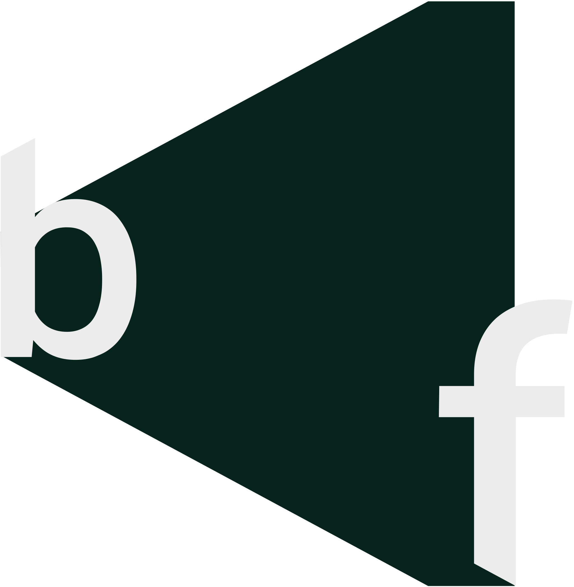
Prepare-se para uma carreira no mercado financeiro
Conhecimento, orientação e conexões para seus próximos passos
Conhecimento para entender o mercado e ampliar suas possibilidades.
Orientação para tomar decisões de carreira com mais clareza.
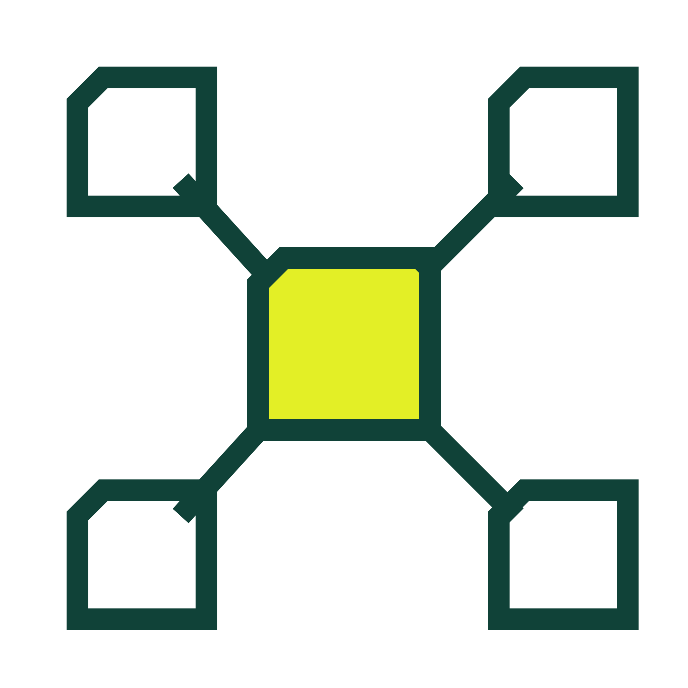
Conexões para conhecer novas trajetórias e construir as suas referências.
Para quem quer construir uma carreira no mercado financeiro e corporativo
O programa é voltado a pessoas pretas ou pardas, por autodeclaração, que estejam cursando ou tenham concluído recentemente uma graduação reconhecida pelo MEC.
Você pode participar vindo de qualquer curso de graduação e não precisa ter experiência prévia no mercado financeiro. É necessário ter disponibilidade para acompanhar as atividades presenciais em São Paulo.

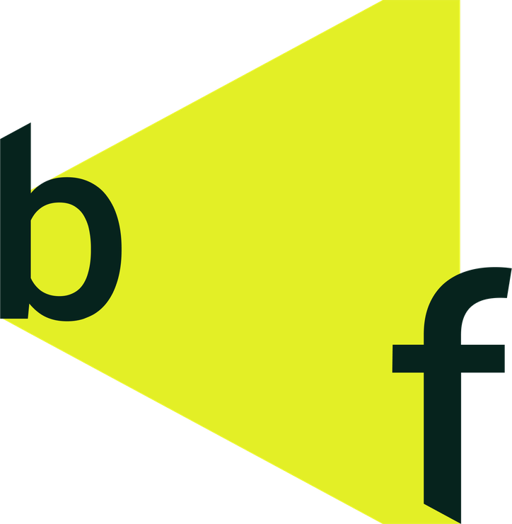
Como o Black Finance funciona
O Programa de Finanças é o principal programa de formação do Black Finance. Sua proposta é aproximar talentos negros do mercado financeiro e corporativo, conectando o aprendizado aos desafios desse ambiente.
A formação trabalha tanto o conhecimento de finanças quanto a comunicação e as habilidades para o ambiente profissional. O objetivo é ajudar você a compreender o setor e se preparar para seus próximos passos de carreira.
Os pilares que nos sustentam
Educação
Aprenda com profissionais e docentes do setor e desenvolva conhecimentos técnicos conectados aos desafios do mercado financeiro e corporativo.
Mentoria
Conte com a experiência de profissionais para orientar seu desenvolvimento técnico e comportamental e conversar sobre seus próximos passos de carreira.
Networking
Aproxime-se de alunos, voluntários e instituições parceiras. Conheça diferentes trajetórias e amplie suas referências sobre o mercado.
O programa na prática
Investimento
Bolsa integral de estudos.
Local
São Paulo.
Aulas
Aos sábados, em período integral, com eventos ocasionais durante a semana.
Formato
Híbrido, com atividades majoritariamente presenciais.
Transporte, alimentação e outras despesas pessoais ficam por conta do aluno. A bolsa cobre os estudos e não corresponde a uma remuneração.
Jornada do aluno
- 01
Processo seletivo
Uma seleção que considera seu potencial, sua trajetória e seu contexto.
- 02
Formação
Aprenda finanças na prática e desenvolva comunicação e habilidades para o ambiente corporativo.
- 03
Exposição ao mercado
Conheça o setor por meio de mentorias, visitas a instituições e trocas com profissionais.
- 04
Empregabilidade
Prepare-se para processos seletivos e receba orientação para os próximos passos da carreira.
- 05
Alumni
Continue conectado à comunidade de ex-alunos, compartilhando experiências e aprendizados.
Lugares que fizeram parte da nossa jornada
Conheça algumas das instituições que visitamos nos últimos anos.


Uma formação que também cria comunidade
Durante o programa
Desenvolva conhecimentos, troque com profissionais experientes e conheça caminhos de atuação no mercado financeiro e corporativo.
Depois da formação
Continue conectado à comunidade alumni do Black Finance, mantendo contato com ex-alunos e compartilhando experiências sobre os próximos passos da carreira.
Onde nossos alunos trabalham
Conheça algumas das instituições em que alunos e ex-alunos do Black Finance desenvolvem suas carreiras.
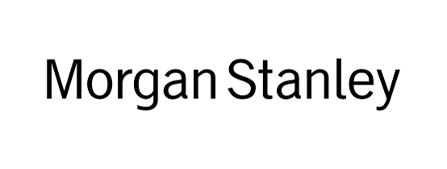

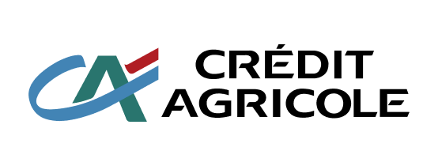
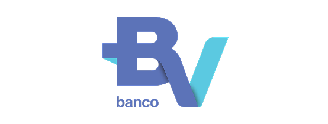
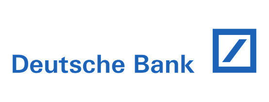

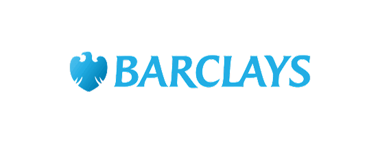
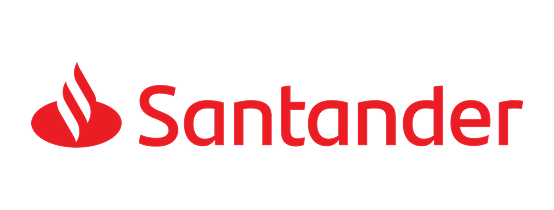
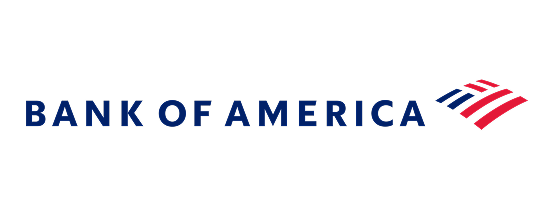
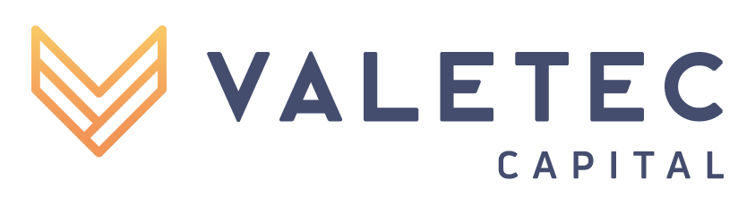
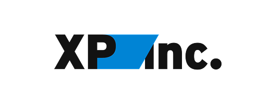
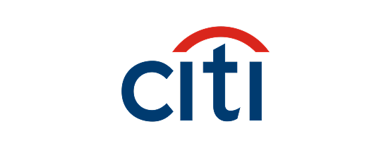
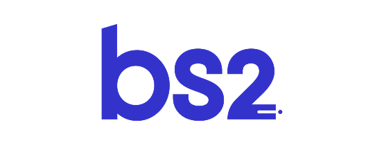
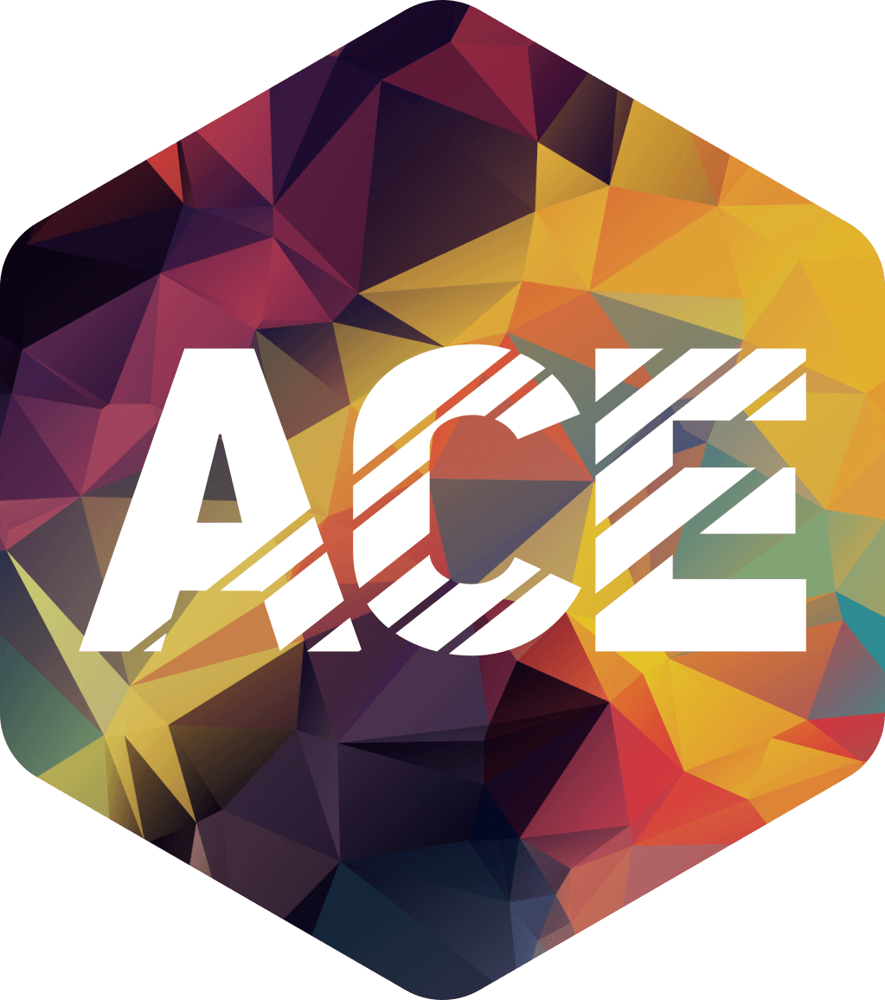

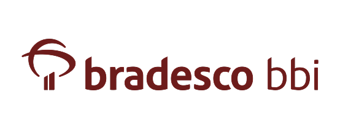
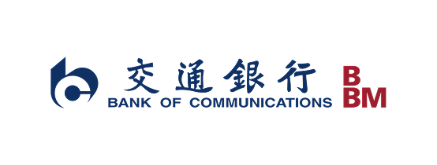
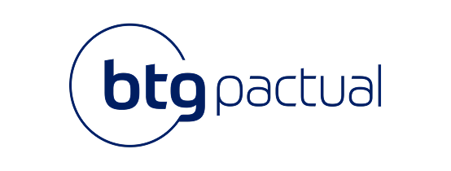
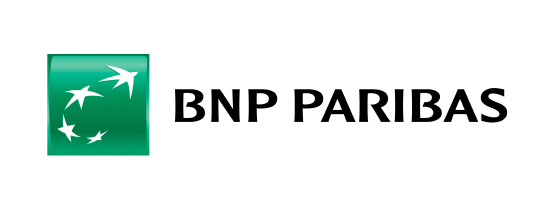
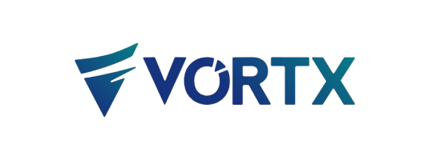
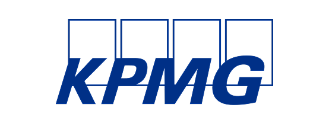
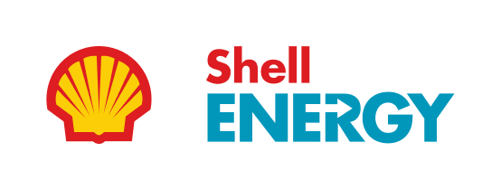
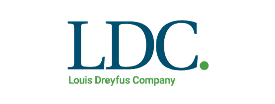
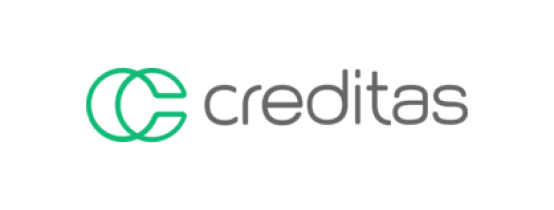
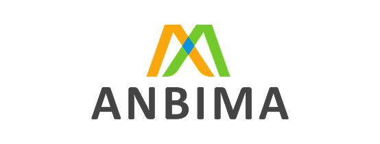
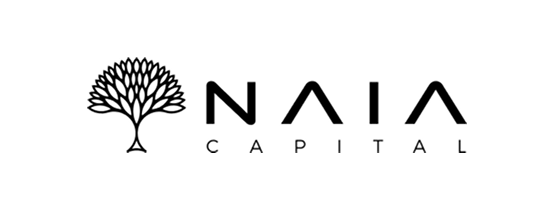
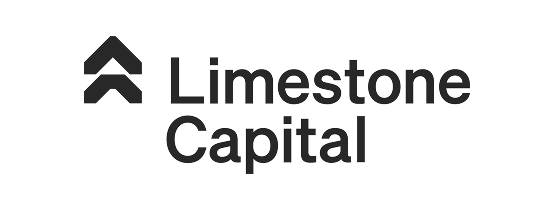
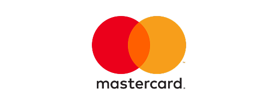
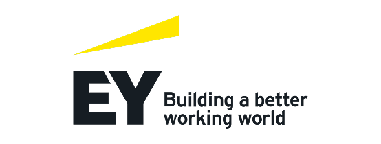
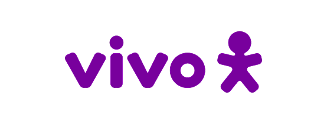
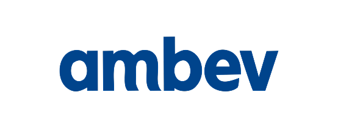
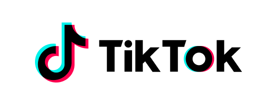
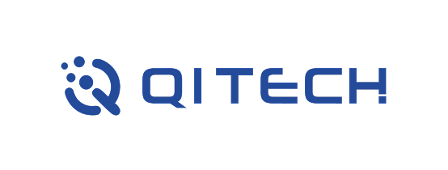
O que nossos alunos dizem
Trajetórias e experiências de quem passou pelo Black Finance.

“O Black Finance foi um divisor de águas na minha vida profissional e pessoal. Antes do programa, eu não falava inglês, o que limitava muito minhas perspectivas de carreira. A oportunidade de conquistar um intercâmbio por meio do Black Finance foi fundamental para minha formação, não apenas pelo idioma, mas pela vivência e pela ampliação de visão de mundo. Hoje, me sinto muito mais preparado tecnicamente e confiante para encarar os desafios do mercado financeiro, e as conexões que construí ao longo do programa foram essenciais para chegar onde estou.”

“O Black Finance me ajudou a ganhar confiança para acreditar na minha trajetória e no meu potencial. O programa me deu espaço para me expor, conhecer novas possibilidades e sonhar com caminhos que eu ainda não conseguia enxergar para mim. Com incentivo e apoio, fui me sentindo mais segura para buscar oportunidades e dar novos passos na minha carreira. Mais do que pensar no próximo desafio profissional, aprendi a confiar que também poderia ocupar aqueles espaços.”

“Ingressei no Black Finance em 2023, já com experiência em assessoria e auditoria na indústria de fundos de investimento. O programa ampliou minhas habilidades técnicas e relacionais e me conectou a profissionais qualificados do mercado de capitais. Ao final da formação, fui aprovada como trainee de finanças em uma multinacional do agronegócio. Até hoje aplico esses aprendizados no meu dia a dia e incentivo quem atende aos requisitos a se inscrever e se dedicar a essa formação.”

“O Black Finance foi um grande marco na minha trajetória. Visitar empresas de peso no mercado financeiro me proporcionou uma visão privilegiada do setor e me ajudou a entender, na prática, operações complexas explicadas por executivos (super) experientes. Além disso, pude aprimorar meus conhecimentos em contabilidade e construir um networking valioso, que fez toda a diferença para eu conquistar a oportunidade em que estou hoje. A mentoria também foi fundamental para fortalecer minha confiança e me preparar para os desafios do mercado. Espero que o Black Finance continue impactando a vida de pessoas negras por muitos anos.”

“Minha experiência com o Black Finance foi transformadora. Os cursos e o networking foram essenciais para meu crescimento profissional, mas a mentoria com grandes nomes do mercado financeiro foi o ponto crucial. Com o apoio desses profissionais, consegui ingressar na área de finanças desejada, que antes parecia distante. Graças a isso, também terei a oportunidade de fazer um intercâmbio ainda este ano, o que ampliará meus horizontes. O Black Finance foi decisivo na minha trajetória e sou imensamente grato pelas portas que se abriram.”

“Meu caminho de saída de Angola ao Brasil foi marcado por desafios, resiliência e pela busca constante por oportunidades. O Black Finance teve um papel fundamental nesse processo, ao me mostrar que, com preparação, dedicação e acesso à educação de qualidade, o que antes parecia impossível pode se tornar realidade. O programa ampliou minha visão sobre o mercado financeiro, fortaleceu minha formação técnica e me deu confiança para construir uma carreira que antes parecia distante. Hoje, enxergo possibilidades reais de crescimento e sou profundamente grata pelas oportunidades que se abriram ao longo dessa jornada.”

“No Black Finance, recebi o prêmio de melhor apresentação e graças à formação e ao apoio do programa, conquistei meu primeiro estágio em Investment Banking em um banco europeu, atuando em processos de M&A na América Latina.”

“Meu maior aprendizado ao longo do Black Finance foi perceber que, quando você passa a acessar certos ambientes e conviver com determinadas pessoas com frequência, entende que nada é tão impossível quanto parecia. Na verdade, tudo se torna muito mais palpável quando você se dedica de verdade.”
“Minha trajetória, saindo de Angola e construindo uma carreira no mercado financeiro, foi marcada por desafios e pela busca constante por oportunidades. O Black Finance foi essencial para me ajudar a enxergar novas possibilidades quando, sozinho, eu não conseguia ver caminhos claros, sendo uma verdadeira luz no fim do túnel. O programa ampliou minha visão sobre o mercado e minha formação, o que me levou a considerar um mestrado em Portugal, passo fundamental para minha inserção no mercado europeu. A mentoria, o acesso e o networking proporcionados pelo Black Finance foram decisivos para que eu chegasse onde sempre busquei.”
“Minha vida profissional foi profundamente transformada pelo Black Finance. O programa mudou a forma como eu enxergava minha própria carreira, abrindo espaço para sonhar com oportunidades que antes pareciam impossíveis. A preparação técnica, o direcionamento e o acesso a profissionais experientes foram fundamentais para ampliar minhas ambições e me dar confiança para buscar posições mais desafiadoras. O Black Finance foi essencial para redefinir meu caminho e para as conquistas que alcancei ao longo dessa jornada.”

“Minha trajetória no mercado financeiro passou por diferentes áreas até que eu entendesse onde realmente queria estar. O Black Finance foi fundamental nesse processo de transição, ajudando-me a migrar de uma atuação mais operacional para uma posição de front office. O programa me proporcionou preparação técnica, direcionamento e acesso a profissionais do mercado, fortalecendo minha confiança para buscar oportunidades mais alinhadas aos meus objetivos. As mentorias e o networking construídos ao longo do Black Finance foram decisivos para as oportunidades que conquistei.”
Seu primeiro passo começa aqui
Confira os requisitos do programa e faça sua pré-inscrição. A pré-inscrição registra seu interesse, já a participação no programa depende do processo seletivo.
Inscrição e testes online
Preencha sua inscrição e realize os testes indicados.
Vídeo técnico
Envie o vídeo conforme as orientações da seleção.
Dinâmica presencial
Participe da atividade presencial prevista no processo.
Entrevistas finais
Avance para as conversas finais da seleção.
Os prazos e as orientações de cada etapa são divulgados na abertura das inscrições.
Quem caminha com a gente
Uma rede de organizações que contribui para ampliar o acesso à formação, conectar talentos ao mercado e fortalecer o futuro do Black Finance.
Investidores sociais
Organizações que investem na nossa missão e contribuem para a continuidade e a expansão do Black Finance.
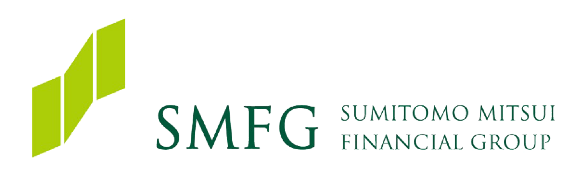
Parceiros institucionais
Organizações que contribuem com nossa jornada por meio da participação de profissionais e mentores, de visitas institucionais ou do apoio às atividades do programa.
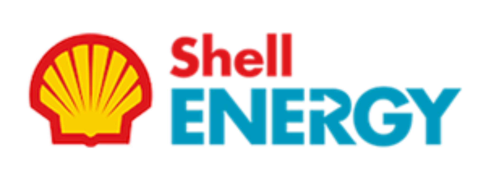
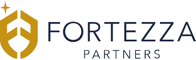
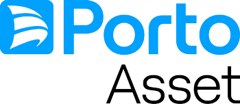
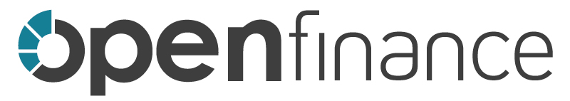
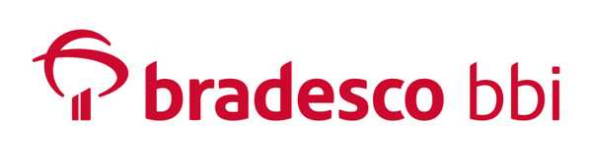
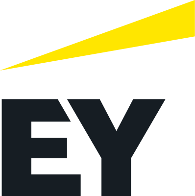
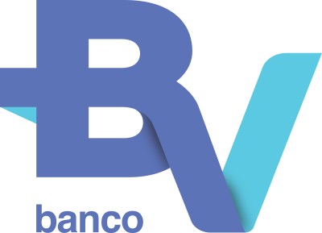
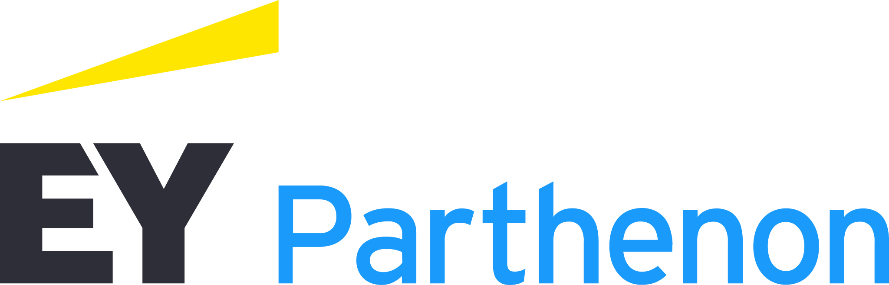
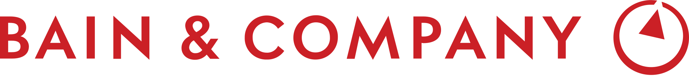

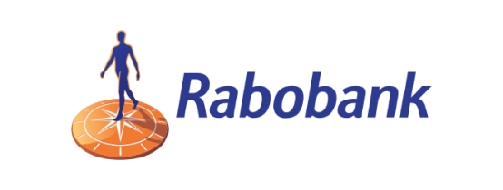
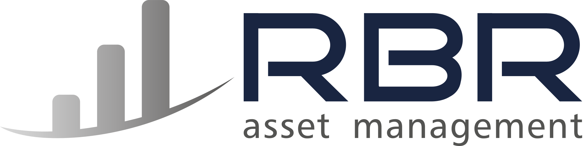

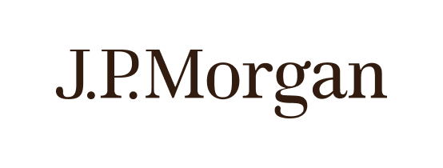
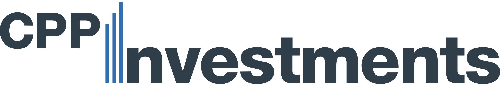
Parceiros de desenvolvimento
Recursos, conhecimento e ferramentas que apoiam a formação e o desenvolvimento do Black Finance.
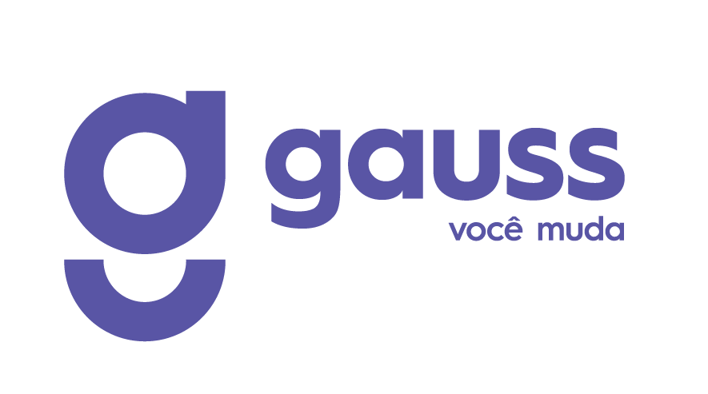
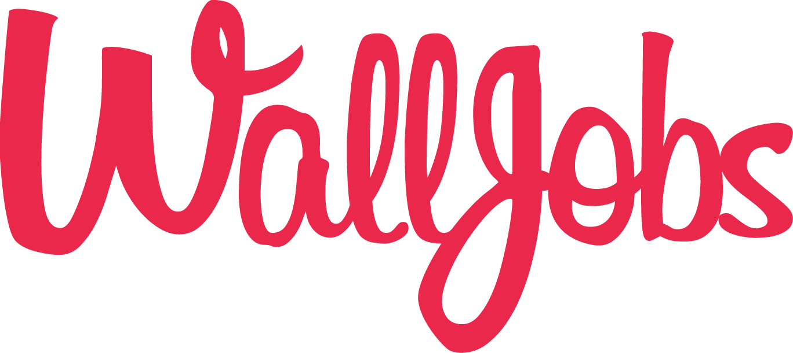
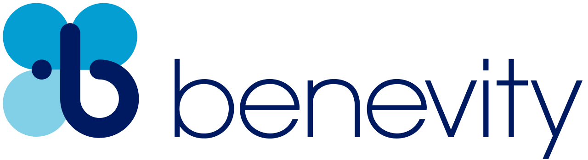
Dúvidas frequentesFAQ
-
Quem pode participar?
Pessoas pretas ou pardas, por autodeclaração, cursando ou que concluíram recentemente uma graduação reconhecida pelo MEC. É necessário ter disponibilidade para participar presencialmente das atividades aos sábados em São Paulo. A faixa de 18 a 30 anos é uma preferência, não um requisito obrigatório.
-
Preciso estudar Economia ou já ter experiência?
Não. O programa recebe candidatos de qualquer curso de graduação e não exige experiência prévia no mercado financeiro.
-
Preciso ter inglês fluente?
Não. Na etapa do vídeo técnico, candidatos com inglês básico podem responder em português. Quem tem nível intermediário ou avançado responde em inglês para nivelamento. O idioma não é eliminatório nessa etapa.
-
Moro em outro estado. Posso participar?
Sim, desde que atenda aos requisitos e tenha disponibilidade para participar presencialmente das atividades aos sábados em São Paulo. Não é necessário assumir um compromisso de mudança de cidade.
-
O programa é gratuito?
Sim. O programa oferece bolsa integral de estudos. Transporte, alimentação e despesas pessoais ficam por conta do aluno. A bolsa não é uma remuneração.
-
Onde e quando acontecem as aulas?
O programa é híbrido, com atividades majoritariamente presenciais em São Paulo. As aulas acontecem aos sábados, em período integral, e eventualmente há eventos durante a semana. É necessário ter disponibilidade para os encontros e as atividades do programa.
-
Como funciona o processo seletivo?
O processo inclui inscrição e testes online, vídeo técnico, dinâmica presencial e entrevistas finais. Os prazos e as orientações são divulgados na abertura das inscrições.
-
Como posso me preparar?
Conheça o programa, confira os requisitos e avalie sua disponibilidade para as aulas. Quando as inscrições abrirem, leia as orientações de cada etapa e acompanhe os prazos.
-
O Black Finance garante emprego ou estágio?
Não. O vínculo com o Black Finance é educacional. A formação, as mentorias e as conexões ajudam na preparação, mas não garantem vaga, estágio ou contratação pelas instituições parceiras.
-
O que acontece depois da formação?
Você passa a integrar a comunidade alumni: uma rede de ex-alunos que mantém conexões e compartilha experiências depois do programa.
Seu potencial merece oportunidades à altura
Conheça o Programa de Finanças Black Finance e dê o primeiro passo para desenvolver sua carreira no mercado financeiro e corporativo.